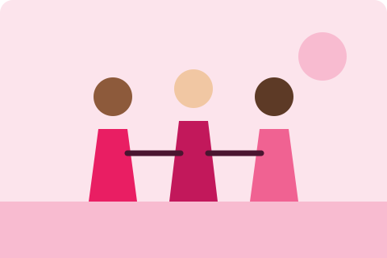

Missão
Acolher e fortalecer mulheres, promovendo seus direitos, sua segurança e sua independência.
A Rede Florescer é uma organização sem fins lucrativos que oferece acolhimento psicológico, orientação jurídica e capacitação profissional para mulheres, ajudando cada uma a reconstruir sua autonomia e sua autoestima.

Acolher e fortalecer mulheres, promovendo seus direitos, sua segurança e sua independência.
Ser referência regional no apoio a mulheres até 2030.
Sororidade, respeito, sigilo e empatia.
| Ano | Mulheres atendidas |
|---|